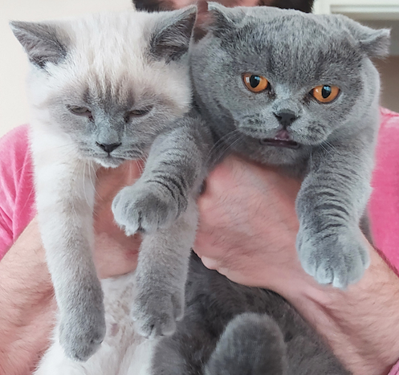

About Groot
Groot is a very cute, young Scottish Fold cat with a temper. She is usually very dull in her actions but she can become really loud when she wants to! She is very cuddly and sweet in the early mornings
Groot with her younger brother Polar
Groot's Characteristics
- She's got small ears
- She is not very active, she doesn't move much!
- She is grumpy when it's play time
- She is open to new games
Groot's Family & Friends
Groot has a very large family. She was born with 3 brothers and 2 sisters. Her mother gave birth 3 times last year. So now Groot has 15 siblings! Most of the brothers and sisters live with their own families now. However, her brother Polar sometimes comes over to visit. Who knows they move in together one day.
Groot doesn't like to be around other cats especially when they are playfull like Polar. She is a bit jelous when others get all the attention but she still loves her friends and family. She tries to join the game when the toy is really interesting but otherwise she doesn't bother.
Click on the links below to read more about Groot's Family and Friends